Tässä vähän mietittävää?
- 57 %BKT:sta julkisiin menoihin, EU:n suurin osuus
- 10,6 %työttömyys, EU:n kärkeä
- 3 906konkurssia vuonna 2025
- 20 vlähes ilman talouskasvua
Ehkä olisi aika kokeilla jotain uutta?

Ehkä olisi aika kokeilla jotain uutta?
